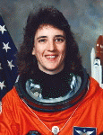

Lyndon B. Johnson Space Center
Houston, Texas 77058
|
National Aeronautics and Space Administration Lyndon B. Johnson Space Center Houston, Texas 77058 |
 |
Biographical Data |
||
Nancy Jane Currie, Ph.D. (Colonel, U.S. ARMY, Ret.)
PRINCIPAL ENGINEER, NASA ENGINEERING AND SAFETY CENTER
JOHNSON SPACE CENTER
PERSONAL DATA: Born December 29, 1958, in Wilmington, Delaware, but considers Troy, Ohio, to be her hometown. Her husband, David W. Currie, is deceased. She has one daughter and one granddaughter. Recreational interests include horses, weightlifting, running, swimming, scuba diving and skiing.
EDUCATION: Graduated from Troy High School, Troy, Ohio, in 1977; received a Bachelor of Science, with honors, in biological science from The Ohio State University, Columbus, Ohio, in 1980; a Master of Science in Safety Engineering from the University of Southern California in 1985 and a Doctorate in Industrial Engineering from the University of Houston in 1997.
ORGANIZATIONS: Institute of Industrial Engineers, Human Factors and Ergonomics Society, Association of Space Explorers, Army Aviation Association of America, Ohio State University and Reserve Officers' Training Corp (ROTC) Alumni Associations, and an Associate Fellow of the American Institute of Aeronautics and Astronautics.
SPECIAL HONORS: NASA - Outstanding Leadership Award; four Space Flight Medals; QASAR Safety Award; Exceptional Service Medal; Flight Simulation Engineering Award; Silver Snoopy Award; U.S. Army - Distinguished Graduate - Air Defense Artillery Officer Basic Course; Honor Graduate - Rotary Wing Aviator and Aviation Officer Advanced courses; two Defense Superior Service Medals; Legion of Merit; two Defense Meritorious Service Medals; Silver Order of St. Michael Army Aviation Award; Army Aviation Association of America Hall of Fame; Delaware Aviation Hall of Fame; Women in Aviation, International Pioneer Hall of Fame; Ohio State University Alumni of the Year Award; The Ohio State University College of Arts and Sciences Distinguished Alumni Award; Ohio Veteran's Hall of Fame; Troy, Ohio Hall of Fame; Ohio State University Army ROTC Hall of Fame; Arts and Sciences Award for Scholarship; Ohio State University
EXPERIENCE: Currie served in the U. S. Army for 23 years and achieved the rank of colonel prior to her retirement in May 2005. Prior to her assignment at NASA, she attended initial rotary wing pilot training and was subsequently assigned as an instructor pilot at the U.S. Army Aviation Center. She has served in a variety of leadership positions, including section leader, platoon leader, and brigade flight-standardization officer. As a master army aviator she logged more than 4,000 flying hours in a variety of rotary-wing and fixed-wing aircraft. She also holds academic appointments as an adjunct associate professor in the Department of Industrial and Systems Engineering at North Carolina State University and lecturer in the Department of Mechanical Engineering at Rice University.
NASA EXPERIENCE: Currie was assigned to NASA's Johnson Space Center in September 1987 as a flight simulation engineer. Selected as an astronaut in 1990, she completed the Astronaut Candidate Training Program in 1991. A veteran of four space shuttle missions, she has accrued 1,000 hours in space. She flew as mission specialist 2, flight engineer, on STS 57 (1993), STS-70 (1995), STS-88 (the first International Space Station assembly mission - 1998) and STS-109 (2002). During her tenure in the Astronaut Office, Currie worked as a spacecraft communicator (CAPCOM), lead flight crew representative for crew safety and habitability equipment and chief of both the Robotics and Payloads-Habitability branches. Following the Columbia tragedy in 2003, she was selected to lead the Space Shuttle Program's Safety and Mission Assurance Office. Currie has also served in a variety of senior management positions at the Johnson Space Center, including manager, Habitability and Human Factors Office; senior technical advisor in the Automation, Robotics and Simulation Division; deputy director of Engineering and chief engineer, NASA Engineering and Safety Center.
Dr. Currie currently serves as principal engineer for the NASA Engineering and Safety Center.
SPACEFLIGHT EXPERIENCE: STS-57 Endeavour (June 21 to July 1, 1993). The primary mission objective was the retrieval of the European Retrievable Carrier satellite (EURECA). Additionally, the mission featured the first flight of Spacehab, a commercially provided middeck augmentation module to conduct microgravity experiments, as well as a spacewalk by two crewmembers, during which Currie operated the shuttle's robotic arm. Spacehab carried 22 individual flight experiments in materials and life sciences research. STS-57 orbited the Earth 155 times and covered 4.1 million miles in 239 hours and 45 minutes.
STS-70 Discovery (July 13 to July 22, 1995). The five-member crew deployed the final NASA Tracking and Data Relay Satellite to complete the constellation of NASA's orbiting communication satellite system. The crew also conducted a myriad of biomedical and remote sensing experiments. STS-70 orbited the Earth 143 times, traveling 3.7 million miles in 214 hours and 20 minutes.
STS-88 Endeavour (December 4 to December 15, 1998) was the first International Space Station assembly mission. During the 12-day mission, the U.S.-built node was mated with the Russian-built Functional Cargo Block (FGB). The crew performed three spacewalks and the initial activation and first ingress of the station, preparing it for future assembly missions and full-time occupation. The crew also deployed two satellites, Mighty Sat 1 and SAC-A. Currie's primary role during the mission was to operate the shuttle's 50-foot robotic arm. The mission was accomplished in 185 orbits of the Earth and covered 4.7 million miles in 283 hours and 18 minutes.
STS-109 Columbia (March 1 to March 12, 2002). STS-109 was the fourth Hubble Space Telescope (HST) servicing mission and the 108th flight of the space shuttle. Hubble's scientific capabilities and power system were significantly upgraded with the replacement of both solar arrays and the primary power control unit, the installation of the Advanced Camera for Surveys, and a scientific instrument cooling system. Currie's primary role was to operate the shuttle's 50-foot robot arm to retrieve and redeploy the telescope during a series of five consecutive spacewalks performed by four crewmembers. STS-109 orbited Earth 165 times, traveling 3.9 million miles in 262 hours and 10 minutes.
AUGUST 2014